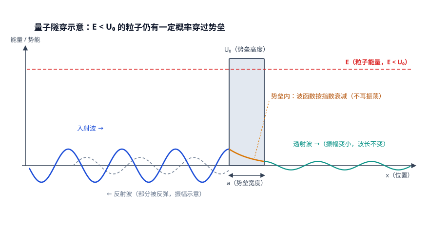
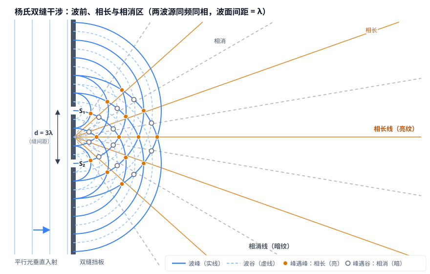
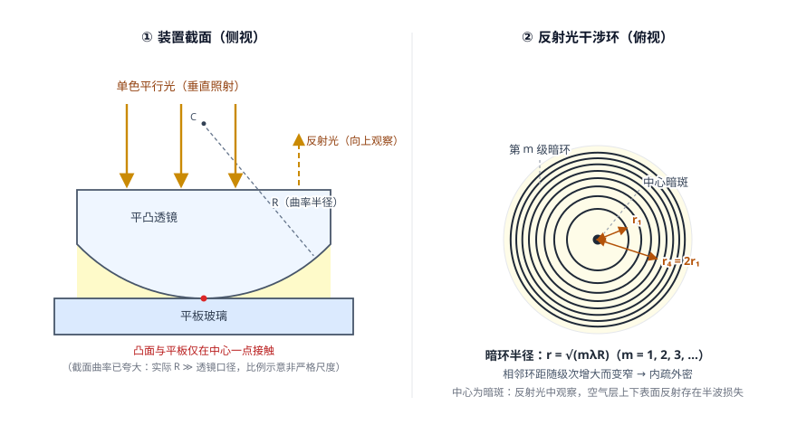

第 12 讲 图像与设计生成
生成篇第二站。上一讲你让 AI 写出了项目的"字"，这一讲让它画出"图"：封面、插图、海报，都能从一段文生图（Text-to-Image）提示词里"显影"出来。学完本讲，你的期末项目将有一套风格统一的图像——第 13 讲做视频时，它们还会变成分镜画面的底稿。
一、本讲学习目标
完成本讲后，你应该能够：
- 用"从噪点中显影"的直觉比喻，说明绘图工具如何把一段文字变成一张图；
- 套用"主体 + 场景 + 风格"基础公式与进阶公式，写出要素完整的文生图提示词；
- 为期末项目产出一套风格统一的图像（封面、插图，进阶加海报），并记录提示词与迭代过程；
- 说出 AI 绘图在科学示意图上的典型局限，会用科学性把关清单逐项核对，并知道 SVG 示意图这一替代方案。
二、课前准备
- 绘图工具就位：按课程工具表注册文生图工具（主力即梦 AI，备选通义万相、可灵、文心一格），并做一次额度测试——随手生成一张最简单的图，确认账号与免费额度可用。
- 带项目材料：期末项目选题说明书（第 8 讲）与核心文本初稿（第 11 讲）——本讲产出的每一张图都要服务这个项目。
- 海报版式参考：收集 1–2 张你喜欢的科普海报，试着用"主体 + 场景 + 风格"三要素说出它好在哪里。
- 选做：想提前摸索的同学，可浏览 AIGC 使用技巧类自学站（如 waytoagi 知识库，内容以当期为准）的绘图技巧版块——记得带上第 2 讲的核查习惯。
三、核心概念精讲
1. 扩散模型直觉：图像是从噪点里"显影"出来的
第 3 讲说过，大模型（LLM）本质上是"文字接龙"的概率机器。那画图的模型呢？当前主流文生图工具背后，多数是一种叫扩散模型（Diffusion Model）的模型。先用一个直观比喻来理解它——注意，这是直觉层面的比喻，不是严格机制。
想象一张布满雪花噪点的旧照片被放进"显影液"：噪点被一点点洗去，图像一层层浮现，从模糊轮廓到清晰细节。扩散模型的生成过程与此类似——模型从一张纯噪声图出发，按你的提示词一步一步"去噪"，每一步都让画面更接近你所描述的样子，几十步之后图像就"显影"完成。也可以把它想成雕塑：大理石块（噪声）里本来"藏着"一尊雕像，雕刻家一刀刀凿掉多余的部分，雕像便浮现出来。这类"从无到有画图"的模型，与只处理文字的模型不同，属于多模态（Multimodal）能力的一种——模型不再只"读字"，还能"作画"。
它一口气解释了文生图的两个常见现象：①同一个提示词，每次生成的图都不完全一样——因为起点是随机噪声，就像显影过程带着随机涨落；②提示词是"显影的方向盘"——你写得越明确，每一步去噪就朝越确定的方向走。这正是本讲强调"提示词要素完整"的原因。
顺带补一句历史：在扩散模型普及之前，早期图像生成的主力是GAN（生成对抗网络）——第 2 讲的 AIGC 时间线上见过它。今天你不必细究门派，只需记住一条主线：无论哪家的绘图工具，大多遵循"文字 → 逐步去噪 → 图像"的过程，差异在细节与参数。
2. 提示词公式：三要素打底，进阶版再加三层
文生图提示词与第 4 讲的提示词四基本功一脉相承，只是更"镜头化"。下面的公式与词汇摘自阿里云《文生图 Prompt 指南》（公式以阿里云百炼官方指南为准，不同绘图工具的写法与参数有差异）。
基础公式：提示词 = 主体 + 场景 + 风格
- 主体：画面主要表现的对象——人、物、装置或想象之物，写清它的特征与动作；
- 场景：主体所处的环境——室内外、天气、时间、光线，真实或虚构空间均可；
- 风格：画种或视觉样式——写实照片、水彩、扁平插画、水墨等。
三要素都交代清楚，一张图就有了"及格线"。想要更稳、更贴近脑中画面，再加三层：
进阶公式：提示词 = 主体描述 + 场景描述 + 风格 + 镜头语言 + 氛围词 + 细节修饰
- 镜头语言：景别与视角——远景还是特写？平视还是俯视？（词汇见下方速查表）；
- 氛围词：画面的情绪——梦幻、孤独、宏伟、宁静；
- 细节修饰：光源位置、道具搭配、色调、分辨率等精细要求。
两个实用补充。其一是负向提示词（Negative Prompt）：反其道而行，声明你不希望出现的元素（如"文字、乱码、多余肢体"），用来排除常见错误。其二是有些工具提供提示词自动扩写（prompt_extend）：默认由模型把你的简短提示词自动补写得更丰富——想完全掌控画面可以关掉，交给工具润色可以打开；具体名称与默认状态以各工具官方文档为准。另外，中英文提示词在不同工具上的效果未必相同，同一含义各写一版、保留更好的一版，是常用的迭代技巧。
成套图像还要解决画风统一的问题：常用做法是全组共用同一组风格词与色调，固定成功的那版提示词、只微调主体与场景；不少工具还提供图生图（以参考图为底生成）、局部重绘（只改画面某一块）等功能，用法以官方文档为准。
本讲的公式与词典只是帮你建立通用语感；落到具体工具，参数名称、支持程度、默认开关都可能不同——以官方文档为准，迁移使用前先花一分钟确认。
3. 五维词典速查表：把"感觉"换成"词"
提示词写不具体，多半不是想象力不够，而是词穷——"好看一点""有科技感"这类表述对绘图工具几乎没有信息量。下表把镜头语言与风格光线维度的常用词汇整理成速查词典（摘选改写自阿里云文生图指南，仅列常用词，完整词典以官方指南为准）：
| 维度 | 它回答的问题 | 常用词汇（摘选） |
|---|---|---|
| 景别 | 画面"截"到多远 | 远景、全景、中景、近景、特写 |
| 视角 | 从哪个方向看 | 平视、俯视、仰视、航拍 |
| 镜头（拍摄类型） | 用什么"镜头感" | 微距、超广角、长焦、鱼眼 |
| 风格 | 像哪种画种 / 介质 | 写实、水彩、水墨、3D 卡通、粘土、折纸、国风水墨、超现实 |
| 光线 | 光从哪来、什么质感 | 自然光（太阳光、月光、星光）、逆光、霓虹灯、氛围光 |
用法很简单：动笔前从每一维各挑 1–2 个词填进提示词，比如"中景、平视、扁平插画、自然光"——一句话就把画面的"取景参数"定下来了。
4. 为什么物理示意图容易"看着对、其实错"？
插画与海报是绘图工具的舒适区；一到科学示意图（光路图、装置图、受力图），它就频繁翻车。原因值得每位同学想明白：
绘图模型从海量图片中学到的是"什么样的图像光路图"，也就是统计意义上的"像"，而不是物理意义上的"对"。它没有内置"反射角等于入射角"这样的定律，手里也没有尺子和圆规——去噪的每一步都朝"更像"走，而不是朝"更对"走。于是常见几类错误（这是对普遍现象的归纳，不针对某个具体工具）：
- 光路角度失真：反射线、折射线画歪，入射角与反射角明显不相等；
- 装置比例失真：透镜比人还大、器件悬空接不上、结构彼此错位；
- 伪科学细节：画面里出现看似专业、实际并不存在的结构与符号——这是幻觉（Hallucination）在图像上的变体。
这不是让你弃用 AI 绘图，而是分场合使用：概念插画、海报放心交给绘图工具；需要物理正确的示意图，让 Agent 直接生成 SVG 矢量图或流程图——坐标、角度、比例都由精确的指令决定，还能逐项修改（本讲进阶挑战就会做一次）。"看着对"与"真的是对"之间的距离，正是本讲要训练你的批判性眼光。
四、物理场景案例演示
课堂演示与你的实操①用的是同一套方法：套公式写初稿 → 生成 → 挑毛病 → 只改一处再生成。下面三条示例提示词可直接复制使用。生成后把最终提示词与改动原因记入记录表——这是本讲的硬要求。
科普概念插画：一颗发光的蓝色小球从左侧滚向一堵高大的灰色"势垒"墙，
小球周围泛起水波般的波纹，波纹连续渗过墙体（墙内不出现完整小球），
在墙的右侧重新汇聚成一颗半透明的小球；
扁平风科普插画，深蓝色渐变背景，中景，平视，
主体居中偏左，右侧留出标注空间，画面简洁留白，高分辨率；
比例示意非严格尺度；标注使用中文、后期添加（不在画面内生成文字）。
负向提示词：文字、乱码、多余小球、模糊边缘。🧪 查看运行结果（SVG 替代演示 · 课堂用实际生图工具）
本环境无文生图工具：此处为 AI Agent 生成的 SVG 矢量示意图替代演示（执行环境：GLM+ZCode）。课堂请在实际生图工具中执行同款提示词并对比。

图：量子隧穿示意（长度为示意像素：λ=110、势垒宽 a=72、E=0.9U₀；衰减系数按 κ=√(2m(U₀−E))/ħ 取值，与入射波数之比严格为 1/3，透射振幅按 e^(−κa)≈1/4 绘制）。科学性自查：①E 虚线低于 U₀ ✓ ②势垒两侧波长相同 ✓ ③势垒内纯指数衰减、不振荡 ✓ ④透射振幅约为入射的 1/4 且波长不变 ✓ ⑤反射波振幅为示意。
物理底子：量子隧穿指粒子能量低于势垒高度时，仍有一定概率穿过势垒的现象，概率随势垒加高、加宽而急剧减小——扫描隧道显微镜（STM）与 α 衰变都用到了它。图中"波纹渗过墙体"是对波函数穿透性的直观比喻：概念插画允许艺术夸张，但不能把夸张当物理（比如不能画成小球"整颗"出现在墙内或"瞬移"到墙外）。"势垒"等标注建议后期添加，见坑②。
科普海报插画：画面中央为双缝干涉示意——左侧一束平行光照向
开有两条狭缝的挡板，两条狭缝各自发出间距一致（同一波长）的同心圆波纹，
向右扩散并交叠，交叠区按波程差呈现明暗相间的干涉条纹；
深蓝色星空背景，霓虹光效，对称构图，近景，
画面顶部与底部预留海报标题与文字排版空间，高分辨率；
比例示意非严格尺度；标注使用中文、后期添加（不在画面内生成文字）。
负向提示词：文字、乱码、扭曲断裂的条纹。🧪 查看运行结果（SVG 替代演示 · 课堂用实际生图工具）
本环境无文生图工具：此处为 AI Agent 生成的 SVG 矢量示意图替代演示（执行环境：GLM+ZCode）。课堂请在实际生图工具中执行同款提示词并对比。

图：杨氏双缝干涉波前图（波面间距 = λ，d = 3λ）。科学性自查：①两波源同频同相 ✓ ②相长点波程差 = mλ、相消点 = (m+½)λ ✓ ③图中实心 / 空心圆点为波面圆弧交点的精确解，与相长 / 相消方向线严格重合，条纹位置由 sinθ = mλ/d 算出，不是目测 ✓。
物理底子：两列频率相同、相位差恒定的相干波叠加，波峰遇波峰处相长干涉（对应亮纹），波峰遇波谷处相消干涉（对应暗纹）——杨氏双缝实验中即明暗相间条纹。AI 画的条纹好不好看由它说了算，对不对要你按这个标准核对。
这次故意选一个"高难度"目标，看看绘图工具在科学示意图上的真实表现：
教学用示意图：牛顿环实验装置——一块曲率半径很大的平凸透镜
凸面朝下放在平板玻璃上、凸面中心与平板仅一点接触，
单色平行光从正上方垂直照射；
从上往下看到一圈圈同心圆干涉环，环半径按平方根规律逐级增大（内疏外密）；
简洁教学风，白色背景，装置截面与俯视环纹分图呈现，构图工整，高分辨率；
比例示意非严格尺度；标注使用中文、后期添加（不在画面内生成文字）。
负向提示词：文字、乱码、多余仪器。🧪 查看运行结果（SVG 替代演示 · 课堂用实际生图工具）
本环境无文生图工具：此处为 AI Agent 生成的 SVG 矢量示意图替代演示（执行环境：GLM+ZCode）。课堂请在实际生图工具中执行同款提示词并对比。

图：牛顿环装置截面与反射光干涉环俯视。科学性自查：①凸面朝下、中心一点接触 ✓ ②空气层厚度按 d(r) = r²/2R 随半径增大 ✓ ③暗环半径按 r = √(mλR) 绘制（r₄ = 2r₁，间距自动内疏外密）✓ ④中心为暗斑（反射光存在半波损失）✓ ⑤截面曲率已夸大、图内已声明。
生成后，用下一节的科学性把关清单逐项核对，把翻车点记入AI 使用日志——这些一手记录，就是你课堂讨论"为什么示意图容易错"的证据。
课后作业要求随图提交提示词记录表：图名 / 最终提示词（含负向提示词）/ 迭代次数 / 每轮改动要点 / 科学性核对结果。下表就是按这个格式对上面三条演示的真实回填：每张图 2 轮迭代，第 1 版的坑是本次实际制图时暴露的，第 2 版已回写进上方演示框——你现在看到的演示提示词就是"第 2 版"。课堂用实际生图工具执行时，请按同样格式记录你自己的两轮迭代，写进AI 使用日志。
| 图名 | 最终提示词（含负向提示词） | 迭代次数 | 每轮改动要点（第 1 版 → 发现的问题 → 第 2 版） | 科学性核对结果 |
|---|---|---|---|---|
| 演示 A 量子隧穿概念图 | 见演示 A 提示词（第 2 版；负向提示词：文字、乱码、多余小球、模糊边缘） | 2 | 第 1 版只写"小球滚向势垒墙、波纹渗过墙体、右侧汇聚成半透明小球"。试画发现两个问题：①"渗过"极易被画成小球本体分身穿墙——墙内出现整颗小球是硬伤；②不声明比例，势垒会被画得与球差不多高，看不出 E 明显低于 U₀。第 2 版：改为"波纹连续渗过墙体（墙内不出现完整小球）"，并补"比例示意非严格尺度；标注使用中文、后期添加"。 | 通过把关清单：E 虚线低于 U₀；势垒内只画指数衰减曲线、不振荡；两侧波长相同；透射振幅约为入射的 1/4。"波纹渗墙"是允许的艺术比喻，但墙内不出现完整小球。 |
| 演示 B 双缝干涉海报 | 见演示 B 提示词（第 2 版；负向提示词：文字、乱码、扭曲断裂的条纹） | 2 | 第 1 版只写"两条狭缝各自发出一圈圈同心圆波纹、交叠区明暗相间"。试画发现两个问题：①两套圆圈疏密各画各的（波长不同）——不满足同频相干，本不该出稳定条纹；②"明暗条纹"没有几何依据，常被画成等间距直条纹，与圆形波前自相矛盾。第 2 版：加"两组波纹间距一致（同一波长）""交叠区按波程差呈现明暗"。 | 两波源同频同相；波峰实线、波谷虚线；相长点波程差 = mλ、相消点 = (m+½)λ；相长 / 相消方向线按 sinθ = mλ/d（d = 3λ）算出，与图中波面交点严格重合——条纹位置是算出来的，不是看着像。 |
| 演示 C 牛顿环装置图 | 见演示 C 提示词（第 2 版；负向提示词：文字、乱码、多余仪器） | 2 | 第 1 版只写"平凸透镜放在平板玻璃上、从上往下看到同心环、内疏外密"。试画发现三个问题：①"放在"不等于"中心一点接触"——透镜悬空或整面贴合都出不了环（整面贴合就没有厚度渐变的空气层）；②装置截面与俯视环纹挤在一张图里，视角混乱；③"内疏外密"只是形容词，无法核对。第 2 版：改"凸面中心与平板仅一点接触"，注明截面与俯视分图呈现，环半径按平方根规律逐级计算。 | 凸面朝下、中心一点接触；空气层厚度按 d(r) = r²/2R 增大；暗环半径按 r = √(mλR) 绘制（r₄ = 2r₁，间距自动内疏外密）；中心为暗斑（反射光存在半波损失）；截面曲率已夸大并在图内声明。 |
一点提醒：提示词迭代的核心是"发现问题 → 只改一处"，与用什么工具画图无关。本页三张 SVG 就是按第 2 版提示词逐条执行的"运行结果"——课堂用生图工具执行同款提示词时，大概率会在第 1 版踩到表中同类问题。这正是记录表的价值：让每次"翻车"都变成可复用的经验。
五、课堂实操任务单
本讲任务全部围绕期末项目展开：每一张图都必须服务于你的选题（第 8 讲立项、第 11 讲核心文本）。任务分保底任务 / 进阶挑战两层——保底人人完成，进阶学有余力选做。
AI 生成的图，交给项目之前一律过下面四项人工核对——就像第 10、11 讲的对拍习惯：用你自己的物理判断当"标准答案"。
- 光路方向：反射角是否等于入射角？折射方向是否合理？光的传播方向画反了吗？
- 能量 / 过程箭头：能量流动、过程方向的箭头画对了吗？有没有多画、漏画或反向？
- 单位标注：图上的数值与单位写对了吗？（更常见的情况：图中文字出错或乱码，须后期重标）
- 装置相对比例：器件的大小、间距比例符合真实装置吗？
任何一项不过关：改提示词重新生成、用图像软件手工修正，或改用 SVG 示意图。核对结果写进记录表。
讨论（第 2 节结尾）：把你记录的翻车案例带到小组——为什么物理示意图容易"看着对、其实错"？每组提炼 2 条经验，汇总成全班的"科学性把关清单"扩展版。
六、常见坑与翻车案例
- 坑① "画一个单摆"式裸提示词：只有主体，没有场景与风格，画面风格全凭工具随机发挥，抽卡像开盲盒。解法：三要素打底，进阶公式加分，五维词典填词。
- 坑② 让 AI 在图里写字、写公式：图中文字出错（笔画错、乱码、字母变形）是常见现象，公式尤其是重灾区。解法：画面留白，标题与标注一律后期用演示文稿或图像软件添加。
- 坑③ 示意图看着对就直接进报告：光路角度失真、装置比例失真、伪科学细节——"像"不等于"对"。解法：把关清单逐项核对；不过关就重生成，或改用 Agent 生成的 SVG 示意图。
- 坑④ 好图一出就关页面：提示词没记录，风格无法复现，成套图各画各的。解法：每次生成都先写进提示词记录表——最终提示词、迭代次数、改动原因缺一不可。
- 坑⑤ 不满意就无限抽卡：免费额度很快见底，还未必抽到更好的。解法：先想清楚"这次只改哪一处"再生成，小步迭代；小组共用账号时约定使用规则。
- 坑⑥ 成套图画风打架：封面是水墨、插图是 3D 卡通、海报是赛博朋克。解法：全组锁定同一组风格词与色调；有条件时用图生图以定稿图为参考（用法以官方文档为准）。
七、自测
1. 用扩散模型的直觉理解，绘图工具"从一段文字到一张图"的过程是？
- 从图库里检索出最接近的一张现成图片
- 从一张随机噪点图出发，按提示词一步步"去噪"，图像逐渐显影
- 把文字先翻译成英文，再匹配对应的表情包
- 由画师接到订单后快速手绘
查看答案
B。起点是随机噪声，所以同一提示词每次生成的图都不完全一样；提示词是"显影的方向盘"。
2. 基础公式"提示词 = 主体 + 场景 + 风格"中，"风格"要素回答的问题是？
- 画面主要表现对象是什么
- 主体处在什么样的环境中
- 画面像哪种画种或视觉样式（如水彩、写实、扁平插画）
- 画面里不希望出现什么
查看答案
C。A 是主体、B 是场景；"不希望出现什么"是负向提示词的事。
3. 负向提示词（negative_prompt）的作用是？
- 把简短提示词自动扩写得更详细
- 声明不希望出现的元素，用于排除常见错误
- 把中文提示词翻译成英文
- 提高生成图片的分辨率
查看答案
B。A 说的是部分工具提供的"提示词自动扩写"（prompt_extend），与负向提示词是两回事；具体功能名称以各工具官方文档为准。
4. 判断题："AI 画的光路图看上去很专业，可以直接放进实验报告。"这个说法对吗？
查看答案与解析
不对。绘图模型按"像"生成而非按"对"生成：它学的是统计意义上的相似，没有内置物理定律。光路角度、能量箭头、单位标注、装置比例必须用科学性把关清单逐项人工核对；不过关就重生成，或改用 Agent 生成的 SVG 示意图。
5. 简答：小组的四张项目图被同学评价"画风打架"，你会从哪几步入手解决？
参考答案
①全组锁定同一组风格词与色调，四张图共用；②固定成功那版的提示词，只微调主体与场景；③有条件时用图生图，以已定稿的封面为参考（用法以官方文档为准）；④每次生成记入提示词记录表，保证可复现——这也是《AI 使用日志》的要求。
八、课后作业
在课堂任务的基础上，完成期末项目的全套图像素材：
- 封面图 1 张：项目主题的"门面"，负责风格定型；
- 插图 2 张：分别对应核心文本的两个关键概念或场景；
- 海报 1 张：进阶挑战的延续，供第 15–16 讲项目展示使用（课堂只完成保底的同学，课后补齐）。
随图提交提示词记录表，每张图一行：图名 / 最终提示词（含负向提示词）/ 迭代次数 / 每轮改动要点 / 科学性核对结果。全部图像风格统一，并与第 11 讲核心文本口径一致。
按课程《学术诚信与 AI 使用规范》，本作业需附AI 使用声明：用了什么工具、让它做了什么、你如何核查——尤其是：哪几张图经过你的物理核对、哪几张标注了"氛围图，非严格示意图"。"AI 产出，人工把关。"
九、进阶拓展（选学）
🎓 建立个人"图像与提示词素材库"（assets 目录思想）
第 8 讲说过，Agent 干活稳，靠的是技能（Skill）——打包好的工作方法。技能文件夹里有一个可选目录，其中 assets（资产）目录专门存放"输出的原料"：模板文件、图像（图表、标志）、数据文件（查找表、模式）等——需要哪种输出，就调用对应的模板，而不是把所有内容硬塞进一个主文件。
把这套思想搬到学习资料管理上，就是建立个人图像与提示词素材库：
| 子目录 | 放什么 | 例子 |
|---|---|---|
| 模板/ | 可复用的版式与框架 | 海报版式参考图、本讲的提示词模板、封面构图草案 |
| 图像/ | 产出的成图与风格参考 | 期末项目定稿封面、风格统一的成套插图、喜欢的风格样例 |
| 数据文件/ | 查得快的"词典与清单" | 五维词典摘录、你自己的风格词表、翻车案例记录 |
好处与技能的 assets 目录如出一辙：下次接活不必从零开始——封面沿用上次的风格词，海报套上次的版式，词典一查就有词。素材库用本地文件夹即可建成；第 14 讲之后，你还可以让 Agent 帮你自动归档与命名。